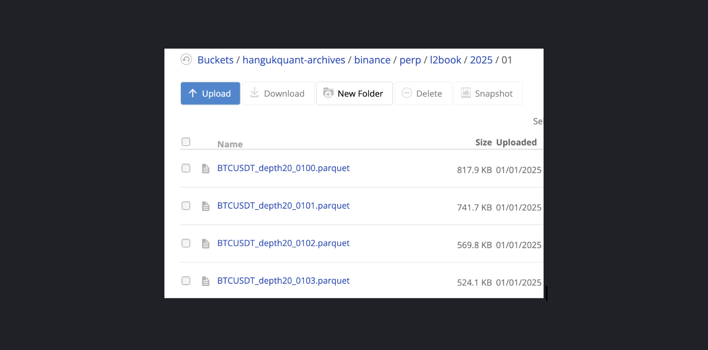

Tick Archival
This tutorial shows how to perform multi-exchange, multi-symbol tick data archival and restoration for maintaing your own historical database for research using quantpylib's gateway connectors and data feeds.
The sample scripts are placed inside ./scripts folder in the quantpylib repo. This example works with exchanges implementing the quantpylib.gateway.master.Gateway endpoints, such as binance, hyperliquid,bybit,paradex,woox...the list goes on.
The demonstration for using the archive-scheduler in the quantpylib.hft.feed class was presented in this section, as well as the specifications of this scheduler. The documentation for the Feed class is here.
This demonstration builds on top of the examples presented to add the backup and restoration parts of the data management lifecycle. The code is self-explanatory and simple to follow, so we will go right into it.
Data Archival
The needed imports:
import os
import asyncio
import logging
from pprint import pprint
from dotenv import load_dotenv
load_dotenv()
from quantpylib.hft.feed import Feed
from quantpylib.gateway.master import Gateway
Data we wish to archive:
archive = {
"binance": ["BTCUSDT", "ETHUSDT", "SOLUSDT", "DYDXUSDT"],
"hyperliquid": ["BTC", "ETH", "SOL"],
"bybit": ["BTCUSDT", "ETHUSDT", "SOLUSDT"],
}
keys = {
'binance':{},
'hyperliquid':{},
'bybit':{},
}
The intializations of the classes and setting scheduler mode, as discussed in examples:
async def main():
#> subscribe to data feeds here
pass
if __name__ == "__main__":
#using our custom logger
from quantpylib.logger import Logger
Logger(
filename="archival.log",
logs_dir="./logs/",
register_handlers=[],
stdout_level=logging.INFO,
file_level=logging.INFO,
file_formatter_kwargs={"include_attrs":["filename","funcName"]},
)
asyncio.run(main())
async def main():
exchanges = list(archive.keys())
gateway = Gateway(config_keys=keys)
await gateway.init_clients()
feed = Feed(gateway=gateway,exchanges=exchanges,archiver=True)
await feed.run_archive_scheduler(splits=1)
l2_feeds = {exchange : [] for exchange in exchanges}
for exc in exchanges:
l2_feeds[exc] = await asyncio.gather(*[
feed.add_l2_book_feed(
exc=exc,
ticker=ticker,
depth=20
) for ticker in archive[exc]
])
pprint(l2_feeds)
trade_feeds = {exchange : [] for exchange in exchanges}
for exc in exchanges:
trade_feeds[exc] = await asyncio.gather(*[
feed.add_trades_feed(
exc=exc,
ticker=ticker
) for ticker in archive[exc]
])
pprint(trade_feeds)
await asyncio.sleep(1e9) #run forever
{"level": "INFO", "time": "2025-01-06T18:42:16.222522+00:00", "message": "{'type': 'l2Book', 'coin': 'BTC'} subscribe", "exchange": "hyperliquid"}
{"level": "INFO", "time": "2025-01-06T18:42:16.222672+00:00", "message": "{'type': 'l2Book', 'coin': 'ETH'} subscribe", "exchange": "hyperliquid"}
... blah blah
{"level": "INFO", "time": "2025-01-06T18:42:16.466152+00:00", "message": "{'type': 'l2Book', 'symbol': 'SOLUSDT'} connected", "exchange": "binance"}
{"level": "INFO", "time": "2025-01-06T18:42:16.521773+00:00", "message": "{'type': 'l2Book', 'symbol': 'DYDXUSDT'} connected", "exchange": "binance"}
... blah blah
{"level": "INFO", "time": "2025-01-06T18:42:16.521903+00:00", "message": "orderbook.50.BTCUSDT subscribe", "exchange": "bybit"}
... blah blah
>>l2book
{'binance': ['binance/perp/l2book/BTCUSDT_depth20',
'binance/perp/l2book/ETHUSDT_depth20',
'binance/perp/l2book/SOLUSDT_depth20',
'binance/perp/l2book/DYDXUSDT_depth20'],
'bybit': ['bybit/perp/l2book/BTCUSDT_depth20',
'bybit/perp/l2book/ETHUSDT_depth20',
'bybit/perp/l2book/SOLUSDT_depth20'],
'hyperliquid': ['hyperliquid/perp/l2book/BTC_depth20',
'hyperliquid/perp/l2book/ETH_depth20',
'hyperliquid/perp/l2book/SOL_depth20']}
{"level": "INFO", "time": "2025-01-06T18:42:16.573811+00:00", "message": "{'type': 'trades', 'coin': 'BTC'} subscribe", "exchange": "hyperliquid"}
... blah blah
>>trades
{'binance': ['binance/perp/trades/BTCUSDT',
'binance/perp/trades/ETHUSDT',
'binance/perp/trades/SOLUSDT',
'binance/perp/trades/DYDXUSDT'],
'bybit': ['bybit/perp/trades/BTCUSDT',
'bybit/perp/trades/ETHUSDT',
'bybit/perp/trades/SOLUSDT'],
'hyperliquid': ['hyperliquid/perp/trades/BTC',
'hyperliquid/perp/trades/ETH',
'hyperliquid/perp/trades/SOL']}
{"level": "INFO", "time": "2025-01-06T18:59:59.944775+00:00", "message": "WRITE archives/binance/perp/l2book/2025/01/SOLUSDT_depth20_0618.parquet records: 2067 size: 151 KB"}
{"level": "INFO", "time": "2025-01-06T18:59:59.956748+00:00", "message": "WRITE archives/binance/perp/l2book/2025/01/DYDXUSDT_depth20_0618.parquet records: 1915 size: 194 KB"}
{"level": "INFO", "time": "2025-01-06T18:59:59.969286+00:00", "message": "WRITE archives/binance/perp/l2book/2025/01/ETHUSDT_depth20_0618.parquet records: 2040 size: 301 KB"}
{"level": "INFO", "time": "2025-01-06T18:59:59.979822+00:00", "message": "WRITE archives/binance/perp/l2book/2025/01/BTCUSDT_depth20_0618.parquet records: 2018 size: 225 KB"}
{"level": "INFO", "time": "2025-01-06T18:59:59.989928+00:00", "message": "WRITE archives/hyperliquid/perp/l2book/2025/01/ETH_depth20_0618.parquet records: 1855 size: 351 KB"}
{"level": "INFO", "time": "2025-01-06T18:59:59.999185+00:00", "message": "WRITE archives/hyperliquid/perp/l2book/2025/01/BTC_depth20_0618.parquet records: 1855 size: 330 KB"}
{"level": "INFO", "time": "2025-01-06T19:00:00.008760+00:00", "message": "WRITE archives/hyperliquid/perp/l2book/2025/01/SOL_depth20_0618.parquet records: 1855 size: 264 KB"}
{"level": "INFO", "time": "2025-01-06T19:00:00.115225+00:00", "message": "WRITE archives/bybit/perp/l2book/2025/01/ETHUSDT_depth20_0618.parquet records: 37493 size: 1750 KB"}
{"level": "INFO", "time": "2025-01-06T19:00:00.219891+00:00", "message": "WRITE archives/bybit/perp/l2book/2025/01/BTCUSDT_depth20_0618.parquet records: 38033 size: 1733 KB"}
{"level": "INFO", "time": "2025-01-06T19:00:00.337505+00:00", "message": "WRITE archives/bybit/perp/l2book/2025/01/SOLUSDT_depth20_0618.parquet records: 44103 size: 1539 KB"}
{"level": "INFO", "time": "2025-01-06T19:00:00.443742+00:00", "message": "WRITE archives/binance/perp/trades/2025/01/BTCUSDT_0618.parquet records: 16956 size: 117 KB"}
{"level": "INFO", "time": "2025-01-06T19:00:00.448196+00:00", "message": "WRITE archives/binance/perp/trades/2025/01/ETHUSDT_0618.parquet records: 13317 size: 105 KB"}
{"level": "INFO", "time": "2025-01-06T19:00:00.449853+00:00", "message": "WRITE archives/binance/perp/trades/2025/01/SOLUSDT_0618.parquet records: 2585 size: 23 KB"}
{"level": "INFO", "time": "2025-01-06T19:00:00.451086+00:00", "message": "WRITE archives/binance/perp/trades/2025/01/DYDXUSDT_0618.parquet records: 716 size: 10 KB"}
{"level": "INFO", "time": "2025-01-06T19:00:00.452716+00:00", "message": "WRITE archives/hyperliquid/perp/trades/2025/01/ETH_0618.parquet records: 1806 size: 19 KB"}
{"level": "INFO", "time": "2025-01-06T19:00:00.453973+00:00", "message": "WRITE archives/hyperliquid/perp/trades/2025/01/BTC_0618.parquet records: 1839 size: 20 KB"}
{"level": "INFO", "time": "2025-01-06T19:00:00.454900+00:00", "message": "WRITE archives/hyperliquid/perp/trades/2025/01/SOL_0618.parquet records: 558 size: 7 KB"}
{"level": "INFO", "time": "2025-01-06T19:00:00.458417+00:00", "message": "WRITE archives/bybit/perp/trades/2025/01/ETHUSDT_0618.parquet records: 11528 size: 61 KB"}
{"level": "INFO", "time": "2025-01-06T19:00:00.463980+00:00", "message": "WRITE archives/bybit/perp/trades/2025/01/BTCUSDT_0618.parquet records: 17574 size: 95 KB"}
{"level": "INFO", "time": "2025-01-06T19:00:00.466282+00:00", "message": "WRITE archives/bybit/perp/trades/2025/01/SOLUSDT_0618.parquet records: 6645 size: 30 KB"}
Data Backup
Our data would be in the local disk. However, as we stream for days, weeks and months at a time - the size of storing high-frequency data becomes large. We would like to backup our files to a cloud datastore such as AWS S3 or Backblaze B2 buckets. We will demonstrate with Backblaze. Signing up and creating a data bucket on their UI takes a matter of minutes. Obtain your keys, and put them in the .env files.
quantpylib.utilties.general features a backup_folder method that walks a local path directory and checks local files against the file paths in your bucket. If it does not exist, it will make a copy of that in your data bucket.
With this:
async def backup_archives():
from quantpylib.utilities.general import get_boto_client, backup_folder
logging.info('BACKUP ARCHIVES')
try:
local = "./archives"
bucket = "backblaze-archives" #your bucket name
s3 = await get_boto_client(
endpoint_url=os.getenv("BACKBLAZE_ENDPOINT"),
aws_access_key_id=os.getenv("BACKBLAZE_ID"),
aws_secret_access_key=os.getenv("BACKBLAZE_KEY"),
)
await backup_folder(s3=s3,local=local,bucket=bucket)
except:
logging.exception('backup error')
return
asyncio.run(backup_archives())
./archives folder is mirrored onto the Backblaze bucket:

with log information:
{"level": "INFO", "time": "2025-01-06T19:04:01.808975+00:00", "message": "BACKUP ARCHIVES"}
{"level": "INFO", "time": "2025-01-06T19:04:04.784779+00:00", "message": "File exists<NO> upload<hyperliquid/perp/trades/2025/01/BTC_0618.parquet>"}
{"level": "INFO", "time": "2025-01-06T19:04:04.784882+00:00", "message": "File exists<NO> upload<hyperliquid/perp/trades/2025/01/SOL_0618.parquet>"}
{"level": "INFO", "time": "2025-01-06T19:04:04.784947+00:00", "message": "File exists<NO> upload<hyperliquid/perp/trades/2025/01/ETH_0618.parquet>"}
{"level": "INFO", "time": "2025-01-06T19:04:04.785062+00:00", "message": "File exists<NO> upload<hyperliquid/perp/l2book/2025/01/BTC_depth20_0618.parquet>"}
{"level": "INFO", "time": "2025-01-06T19:04:04.785122+00:00", "message": "File exists<NO> upload<hyperliquid/perp/l2book/2025/01/ETH_depth20_0618.parquet>"}
{"level": "INFO", "time": "2025-01-06T19:04:04.785173+00:00", "message": "File exists<NO> upload<hyperliquid/perp/l2book/2025/01/SOL_depth20_0618.parquet>"}
{"level": "INFO", "time": "2025-01-06T19:04:04.785307+00:00", "message": "File exists<NO> upload<bybit/perp/trades/2025/01/BTCUSDT_0618.parquet>"}
{"level": "INFO", "time": "2025-01-06T19:04:04.785370+00:00", "message": "File exists<NO> upload<bybit/perp/trades/2025/01/SOLUSDT_0618.parquet>"}
{"level": "INFO", "time": "2025-01-06T19:04:04.785468+00:00", "message": "File exists<NO> upload<bybit/perp/trades/2025/01/ETHUSDT_0618.parquet>"}
{"level": "INFO", "time": "2025-01-06T19:04:04.785631+00:00", "message": "File exists<NO> upload<bybit/perp/l2book/2025/01/SOLUSDT_depth20_0618.parquet>"}
{"level": "INFO", "time": "2025-01-06T19:04:04.785718+00:00", "message": "File exists<NO> upload<bybit/perp/l2book/2025/01/ETHUSDT_depth20_0618.parquet>"}
{"level": "INFO", "time": "2025-01-06T19:04:04.785784+00:00", "message": "File exists<NO> upload<bybit/perp/l2book/2025/01/BTCUSDT_depth20_0618.parquet>"}
{"level": "INFO", "time": "2025-01-06T19:04:04.785952+00:00", "message": "File exists<NO> upload<binance/perp/trades/2025/01/BTCUSDT_0618.parquet>"}
{"level": "INFO", "time": "2025-01-06T19:04:04.786010+00:00", "message": "File exists<NO> upload<binance/perp/trades/2025/01/SOLUSDT_0618.parquet>"}
{"level": "INFO", "time": "2025-01-06T19:04:04.786066+00:00", "message": "File exists<NO> upload<binance/perp/trades/2025/01/ETHUSDT_0618.parquet>"}
{"level": "INFO", "time": "2025-01-06T19:04:04.786122+00:00", "message": "File exists<NO> upload<binance/perp/trades/2025/01/DYDXUSDT_0618.parquet>"}
{"level": "INFO", "time": "2025-01-06T19:04:04.786231+00:00", "message": "File exists<NO> upload<binance/perp/l2book/2025/01/SOLUSDT_depth20_0618.parquet>"}
{"level": "INFO", "time": "2025-01-06T19:04:04.786282+00:00", "message": "File exists<NO> upload<binance/perp/l2book/2025/01/DYDXUSDT_depth20_0618.parquet>"}
{"level": "INFO", "time": "2025-01-06T19:04:04.786335+00:00", "message": "File exists<NO> upload<binance/perp/l2book/2025/01/ETHUSDT_depth20_0618.parquet>"}
{"level": "INFO", "time": "2025-01-06T19:04:04.786387+00:00", "message": "File exists<NO> upload<binance/perp/l2book/2025/01/BTCUSDT_depth20_0618.parquet>"}
Data Restoration
Suppose we have changed our workstation, and the local archives are empty. We would like to retrieve/restore data from our backblaze archive into local disk for tick-data modelling, research or backtesting. This is also incredibly easy - we just decide which ticker, exchange and date-range. The Feed class can generate file paths to search for, and quantpylib.utilties.general features a restore_folder method:
async def restore_archives(exc,ticker,start,end,depth=20):
from quantpylib.utilities.general import get_boto_client, restore_folder
logging.info('RESTORE ARCHIVES')
local = "./archives"
try:
local = "./archives"
bucket = "backblaze-archives"
s3 = await get_boto_client(
endpoint_url=os.getenv("BACKBLAZE_ENDPOINT"),
aws_access_key_id=os.getenv("BACKBLAZE_ID"),
aws_secret_access_key=os.getenv("BACKBLAZE_KEY"),
)
lob_archives = Feed.load_lob_archives(
exc=exc,
ticker=ticker,
depth=depth,
start=start,
end=end,
path=local,
only_paths=True,
)
trade_archives = Feed.load_trade_archives(
exc=exc,
ticker=ticker,
start=start,
end=end,
path=local,
only_paths=True,
)
search_files = [os.path.relpath(archive_file, local) for archive_file in lob_archives + trade_archives]
pprint(search_files)
await restore_folder(s3=s3,local=local,bucket=bucket,match_files=search_files)
except:
logging.exception('restore error')
return
YYYY-MM-DD:HH:
asyncio.run(
restore_archives(
exc='binance',
ticker='BTCUSDT',
start='2025-01-05:22',
end='2025-01-06:02'
)
)
./archives folder:
{"level": "INFO", "time": "2025-01-06T18:56:25.905379+00:00", "message": "RESTORE ARCHIVES"}
['binance/perp/l2book/2025/01/BTCUSDT_depth20_0522.parquet',
'binance/perp/l2book/2025/01/BTCUSDT_depth20_0523.parquet',
'binance/perp/l2book/2025/01/BTCUSDT_depth20_0600.parquet',
'binance/perp/l2book/2025/01/BTCUSDT_depth20_0601.parquet',
'binance/perp/l2book/2025/01/BTCUSDT_depth20_0602.parquet',
'binance/perp/trades/2025/01/BTCUSDT_0522.parquet',
'binance/perp/trades/2025/01/BTCUSDT_0523.parquet',
'binance/perp/trades/2025/01/BTCUSDT_0600.parquet',
'binance/perp/trades/2025/01/BTCUSDT_0601.parquet',
'binance/perp/trades/2025/01/BTCUSDT_0602.parquet']
only_paths=False loads the actual data from disk into memory:
lob_archives = Feed.load_lob_archives(
exc=exc,
ticker=ticker,
depth=depth,
start=start,
end=end,
path=local
)
trade_archives = Feed.load_trade_archives(
exc=exc,
ticker=ticker,
start=start,
end=end,
path=local
)
Has it ever been easier?